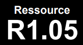

Introduction aux bases de données et SQL
Les apprentissages critiques liées à la ressource R1.05 sont : AC 1 Mettre à jour et interroger une base de données...
Descriptif détaillé
Objectif
L'objectif de cette ressource est l'initiation aux bases de données.
Savoirs de référence étudiés
- Approche de la conception des bases de données
- Algèbre relationnelle
- Base du SQL